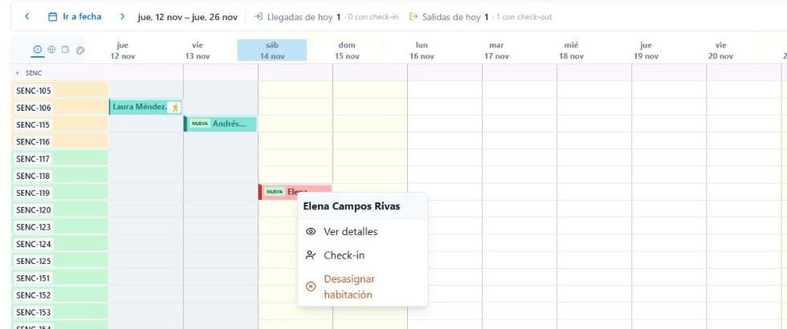

1
Haz clic derecho en una reserva
Pon el ratón sobre la barra de la reserva y pulsa el botón derecho. Sale un menú con el nombre del huésped y lo que puedes hacer con esa reserva.

- 1La barra de la reserva: aquí, la de Elena Campos Rivas, que llega hoy a la SENC-119.
- 2Ver detalles: abre la ventana de la reserva.
- 3Check-in: hace el check-in al momento (sección 2). Solo sale el día de llegada.
- 4Desasignar habitación (en naranja): quita la habitación de la reserva. No la uses solo para mirar.
En tu turno: cuando hay cola en recepción, el clic derecho te ahorra buscar y abrir la reserva para hacer algo rápido.